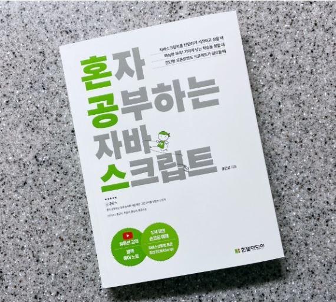

Overview
프로젝트 개요
Java공부 목적:완벽하게 Java를 마스터하여 시험 100점.
사용 기술:이클립스
어려웠던 점:영어가 너무 많아서 힘이들었다.
해결방법:영어공부를 좀 더 해야겠다.
HTML
CSS
GitHub Pages
Reflection
무엇을 배우고 느꼈는지 맞춰보시오.
1) Java로 코드짜는것이 재미있다고 느꼈다.
2) Java가 쉬울줄 알았는데 어려웠다.
3) Java로 코딩을 할때 신경을 많이 써야한다는 생각이 들었다.
4) Java를 만지는것이 지루하고 힘들었다.